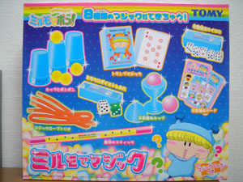
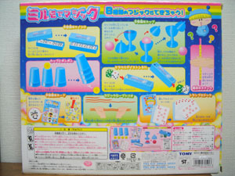
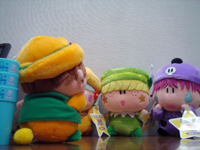
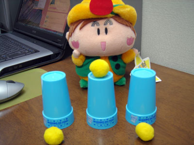
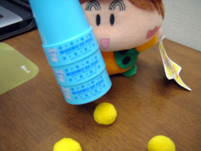

トミーから大々的な予告もなく、ひっそりと発売された『ミルモでマジック』。ミルモとマジックのつながりは？？というツッコミは置いておいて、私も先日トイザらス相模原店にてゲットしてきました。価格は税込みで2,499円。
マジックはサイコロやトランプ風カードを使ったものなど全部で８種類。簡単に出来るものもあれば、中には練習を積まないとマジックとして見せられないものも(^^;。中でも『カップとボンボン』はうまく練習を積めば、「お～」という観衆の驚きを得ることが出来るかもしれませんね。

パンタとパピィを含めた主役６妖精が描かれている派手な外箱も、ファンにはうれしい点。まさにちゃあみんぐなグッズであると言えますね。
というわけでここから先は『カップとボンボン』をマンボくんに実演していただきます。

ペータ「なんだべマンボ、こんなところに急に呼び出して」
マンボ「今日ここに集まってもらった理由はだな…、
オレのスペシャルなマジックにぜひびっくりしてもらいたい！」
ビケー「…マンボだけに期待していいのか疑問だね」
ペータ「マンボはいつにもなく自信満々に見えるだべ～」
マンボ「ふふんっ」
ガビン「でも…失敗したらどうしよう・・・がび～ん」
マンボ「やる前から失敗なんて言うなーっ」

マンボ「ここに３つのカップと３つのボンボンがあります。
真ん中のカップの上にボンボンを１つ置いて、両側のカップを
真ん中のカップに重ねると…」
今日のためにしっかり練習してきたのか、手際の良いマンボくん。
マンボ「ここでオレの特製呪文をかけるぞ。
マンボでマジック！！！」
３人「・・・（かっこ悪い）」

マンボ「カップを持ち上げると…ほらっ。
カップの中にあったボンボンがカップをすり抜けているだろ！」
３人「おぉ～～っ」

マンボ「って、マジックの取り扱い説明書を読むな～～っ」
ガビン「練習すればボクたちにも出来そうかも…」
素晴らしいマジックは道具次第ではなく練習次第と言えそうです。これを機に皆様の特技にも「マジック」を加えてみてはいかがでしょうか？(^^)
(2005/8/7)